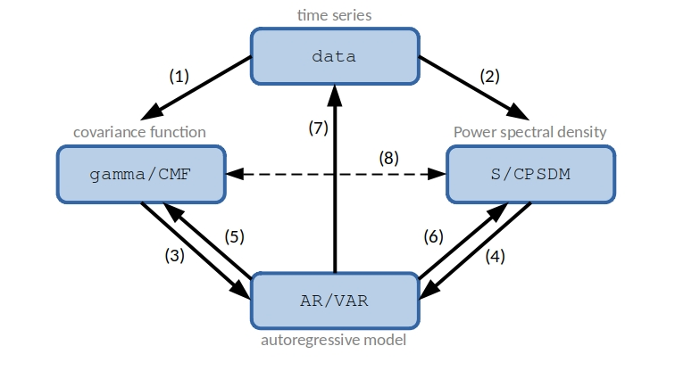

Basic notions
mVARbox works with mathematical objects, and enables intuitive links between them. The main classes included are:
data, to handle uni/multivariate data series (time series and space series).AR, to handle autoregressive models.VAR, to handle multivariate autoregressive models.gamma, to handle auto/cross covariance functions.CMF, to handle covariance matrix functions.Sto handle auto/cross power spectral densities (PSDs).CPSDM, to handle coss power spectral density matrices.
Note that VAR, CMF and CPSDM are the multivariate version of AR, gamma and S, respectively.
The following figure shows the links between classes that are implemented in mVARbox.
In the figure, each row corresponds to the process of converting an object from one specific class to another distinct class. Different rows involve different mathematical problems or procedures. Below is a short description of each of them:
(1): Estimation of the covariance function of data series.
(2): Spectral estimation from data series. Several methods based on correlogram and periodogram approaches are implemented. You will find specific functionalities that are typically absent in other software packages. For instance, you can define precise frequency values for spectrum evaluation, enabling enhanced spectral resolution in plots with frequency-log scales.
(3) and (4): Estimation of an autoregressive model from either a covariance function or a power spectral density. The estimation of an AR/VAR model from a covariance function includes the possibility of restricted VAR models, where only specific lags are considered in the model scheme. Restricted AR models are particulary useful for processes with a slow decay of their covariance function. The estimation of an AR/VAR model from the PSD is less common in the literature, but it becomes very handy when modelling processes that are described in the frequency domain.
(5) and (6): Obtention of the theoretical covariance function and power spectral density of an autoregressive model.
(7): Data synthesis from an autoregressive model. This allows you to generate synthetic time or space series with prescribed statistical features (those of the employed AR/VAR model).
(8): Applications of the Wiener-Khinchin theorem.